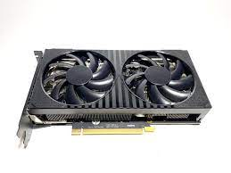
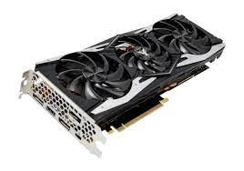
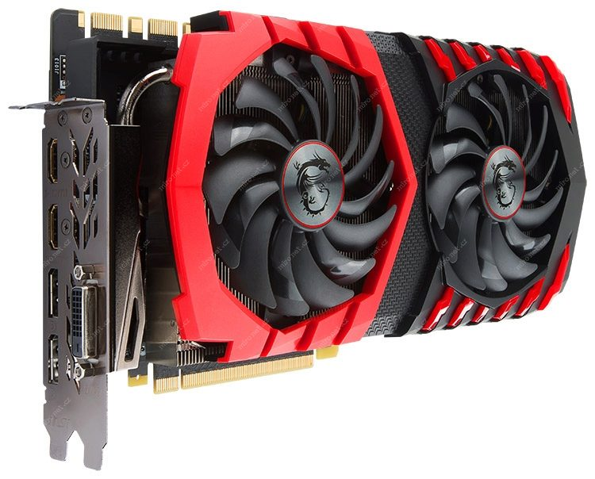

-
Grafické procesory (GPU)
Hlavním komponentem grafické karty je grafický procesor, známý také jako GPU (Graphics Processing Unit). GPU je specializovaný čip navržený pro rychlé zpracování grafiky a 3D vizualizaci. Moderní GPU jsou schopny zpracovávat obrovské množství dat a provádět složité výpočty paralelně. -
Ray tracing
Jednou z nejnovějších a nejzajímavějších technologií v oblasti grafických karet je ray tracing. Tato technologie umožňuje vytvářet fotorealistické scény simulací chování světla a jeho interakce s objekty. Ray tracing je extrémně náročný na výpočetní výkon a vyžaduje pokročilé GPU. -
VR (virtuální realita)
Grafické karty mají klíčovou roli v rozvoji virtuální reality. Pro plynulý a realistický zážitek ve virtuálním prostředí je potřeba vysoký výpočetní výkon a rychlá grafika. Moderní grafické karty jsou vybaveny speciálními funkcemi pro podporu VR, jako je například technologie Nvidia VRWorks. -
Dobývání kryptoměn
Grafické karty se staly důležitým nástrojem pro těžbu kryptoměn, jako je například Bitcoin. Kvůli svému vysokému výpočetnímu výkonu jsou grafické karty schopny efektivně provádět matematické operace potřebné pro těžbu kryptoměn. V minulosti to vedlo k nedostatku grafických karet na trhu, protože těžaři je masivně nakupovali. -
Progresivní obnovování obrazu (Progressive Refresh)
Tato technologie, známá také jako Adaptive Sync nebo Variable Refresh Rate (VRR), umožňuje synchronizovat obnovovací frekvenci obrazovky s rychlostí vykreslování grafické karty. To eliminuje problémy jako je roztrhání obrazu (screen tearing) a zajišťuje hladší a plynulejší zobrazení. -
Paralelní výpočty
Grafické karty jsou navrženy tak, aby prováděly paralelní výpočty. Díky velkému počtu shader jednotek a jiných specializovaných jednotek jsou schopny rychle zpracovávat

RTX 3060 Ti

RTX 2080

GTX 1080 Ti